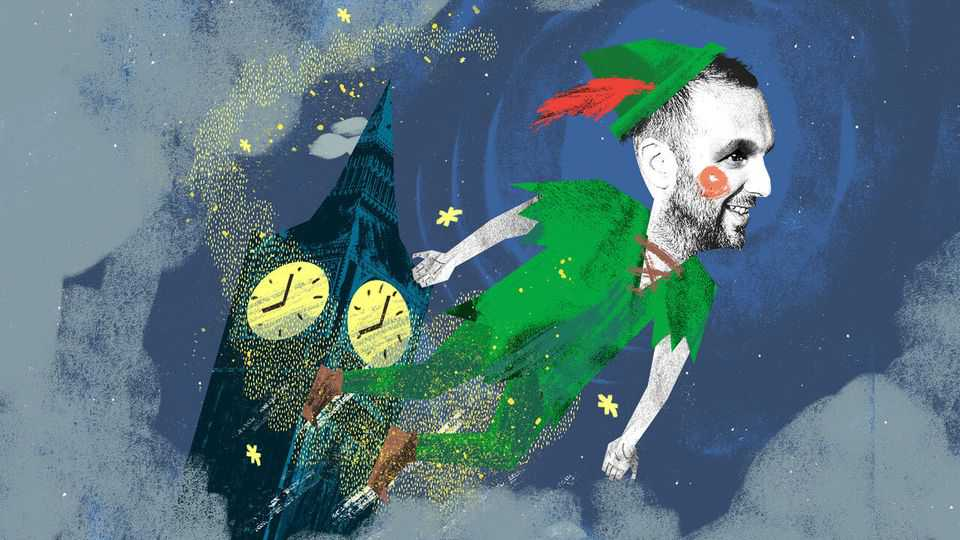

Zack Polanski and the politics of eternal adolescence
He’s only 43!

Aug 6th 2026
For all the nightclub appearances, the late-night social-media posts and the Zoomeresque affinity for vertical video, a simple fact about Zack Polanski, the leader of the Green Party, goes unmentioned: he is a middle-aged man. At 43 years old he is the same age David Cameron was when he became prime minister. Come the next general election in 2029, Mr Polanski will be nearly as old as the grey-haired, grey-suited Sir John Major was when he took office in 1990.
Yet to his sympathisers Mr Polanski is little more than a child. They brush over mortifying moments, such as when he offered to enlarge someone’s breasts via hypnosis. It was explained away by one Guardian writer: “He didn’t know he’d want a career in politics, he was only just 30.” Only just 30! “Zack Polanski is still learning”, read the title of another profile. Mr Polanski is 43 going on 19 and Britain’s first eternally adolescent political leader.
The politics of eternal adolescence are peculiar. All politicians are embarrassed by their experimental teenage views, but what happens if this experimentation is delayed? Mr Polanski’s political rebellion came in 2015 when he joined the Liberal Democrats. He was 32 years old. When the Greens smashed Labour-held councils in London earlier this year, it was a moment of triumph that was undermined when it emerged that their party leader had not voted. Mr Polanski “fell short of time” and did not register to vote, like a student who did not know whether he would be in halls or at Mum’s on election day.
Being an eternal adolescent has its advantages. Mr Polanski is one of the first leaders of a major party to be a smartphone addict and social media comes naturally to him. It can backfire. One batch of photos he shared included an image of a guillotine and the caption “We’re only making Plans For Nigel”, after a song from 1979 (three years before Mr Polanski’s birth). “If I’d done it deliberately, I’d be apologising,” he said, in the syntax recognisable to parents of teenagers everywhere.
In some ways Mr Polanski is arrested development incarnate. Having abandoned the Lib Dems, he was elected to the London Assembly for the Greens in 2021: it was his first proper job. He was 38 years old. Every politician is shaped by their formative professional years. Sir Keir Starmer began his working life as a lawyer and remained one in office; Mr Polanski spent his as an out-of-work actor, in one case dressing up as a hot dog. For Mr Polanski, all of politics is a stage, and he is merely a player.
Mr Polanski is not alone in his perpetual youth. He is an indicator of where Britain is heading, rather than an oddity. Adulthood is no longer for everyone. Its trappings are harder to come by. Entry-level jobs are being crushed, leaving people with Mr Polanski’s pick-and-mix careers. Government failure has made driving tests often impossible to book. The result? More young people without a driving licence, just like Mr Polanski. About half of people born in the 1960s owned a home by 28. Among those born in the 1990s, barely a quarter did. Should it be any surprise that Mr Polanski, a skint actor, until recently lived on a narrowboat?
In terms of experience, Mr Polanski is as young as he appears. He has been in politics full-time for only five years. Politicians need to do their 10,000 hours, yet politics chews through them faster than ever. Even an otherwise capable individual, such as Rishi Sunak, suffered through a lack of experience, going from junior minister to chancellor in barely half a year. It helps to be politically long in the tooth.
Perhaps nowadays an element of immaturity is necessary. Self-styled “adults” and “grown-ups” have been in charge for the bulk of the past two decades, in which the economy has stagnated and it became impossible for some to grow up. Politics today is dominated by what Anton Jäger, an Oxford academic, labels “hyperpolitics”. The world has shifted from an era of “mass politics”, when engagement was high but filtered through mass institutions. Now it is one of “hyperpolitics”, where engagement is still high but no longer channelled by, say, a big trade-union movement or dense, representative political parties.
Think of this change as the difference between the drudgery of adulthood versus the electric irresponsibility of adolescence; the weightiness and sunk costs of institutions slowly built over time versus what Mr Jäger calls the “low-commitment, low-cost, and all too often, low-value” politics of our current era. Everything is a teenage phase, felt intensely, but briefly, leaving little behind but a few awkward memories. If “hyperpolitics” is real, then Mr Polanski is a product of it.
For all that ai-types fret about the rise of a permanent underclass, cut off from the riches of the future, a more pressing worry in Britain is the rise of the permanent adolescent; a generation for whom the fundamentals of adulthood—a career, a home, a family—never arrive. A Peter Pan class who can simply never grow up. Why shouldn’t they have a leader? And who better than one of their own in the form of Mr Polanski?
Mr Polanski may turn out to be a moment, rather than the start of a movement. He enjoyed a rapid rise and is now enduring a fall; the odd poll put the Greens ahead of Labour, now they limp along in fourth. Beyond those forced into everlasting adolescence, Mr Polanski’s popularity is dropping. And so those in the Green Party are beginning to despair. What if the errors are not ones of “youth”, but an innate unsuitability to do the job? At that point, being Green Party leader and, briefly, a threat to Britain’s establishment becomes but another gig, with a hot-dog suit switched to a green rosette. A short teenage chapter in a career full of them. Still, his whole life is ahead of him. He’s only 43!■